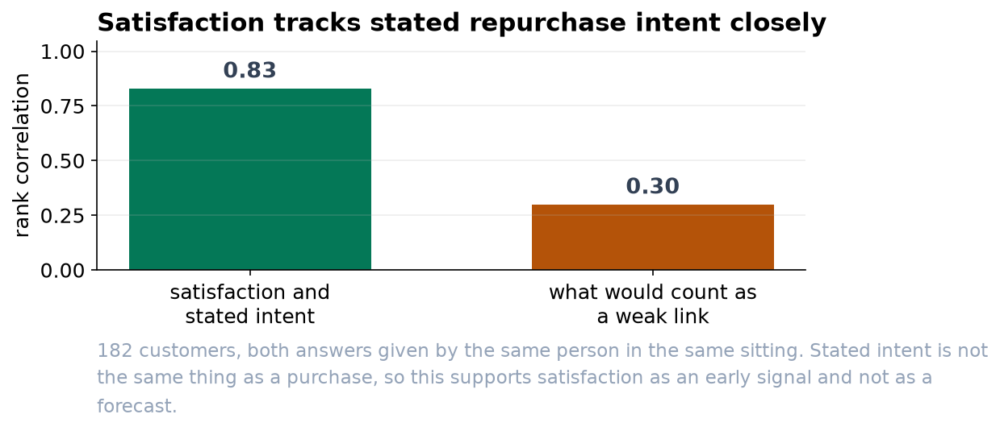

Satisfied Customers Say They Will Come Back
A strong link between two survey scales, and an honest note on what a survey can and cannot show.
Recommendation
Satisfaction and stated repurchase intent are strongly linked (rank correlation 0.83, n = 182), which supports treating satisfaction as an early signal of retention. Two things temper it. Both answers came from the same person on the same form, which tends to inflate the link, and both are stated intentions rather than purchases. Before this drives a target, we should connect these survey answers to what those customers actually went on to buy.
What we found
182 customers rated their satisfaction and their likelihood of buying again, each on a 1-to-7 scale. The two answers track each other closely: as satisfaction rises, so does stated intent, with a rank correlation of 0.83. A result this strong on a sample this size is not something chance produces (p < 0.001). Customers at the low end of satisfaction are telling us plainly that they do not expect to return.


A word on the method, because it affects what you can quote
Survey scales look like numbers but behave like labels. A 6 is more satisfied than a 4, yet nobody can say the gap between 4 and 5 is the same size as the gap between 6 and 7. So we used a method that relies only on the ordering of the answers rather than on the numbers themselves. The practical consequence for reporting: please avoid headlines such as 'average satisfaction is 4.6'. That figure quietly assumes the equal spacing the scale does not give us. The share of customers answering 6 or 7 is a sturdier number to publish.
What we cannot say
This is one survey taken at one moment. It shows that two answers agree with each other, which is a weaker claim than showing that satisfaction drives revenue. It is entirely possible that a customer in a good mood marks both scales highly, and that some of the strength we are seeing is simply that. The way to settle it is to match these respondents to their purchase records over the next two quarters, at which point we would be measuring loyalty instead of asking about it.
Suggested next step
Keep fielding the survey, but add consent to link responses to account activity. A follow-up that compares stated intent against observed repurchase would tell us not only whether satisfied customers say they will return, but how many of them do.